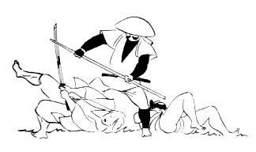

ART
MARTIAUX ET SPORTS DE COMBATS
Etymologiquement, l’art
martial correspond à l’art de la guerre. En effet, les arts
martiaux désignent tout d’abord une école où la vie y est
enseignée d’une manière très philosophique. Les techniques de
combats n’y sont enseignées que dans un second lieu. En réalité,
les arts martiaux ont pour but de viser l’enrichissement général
d’une personne. Or, les sports de combats font plus référence à
un type d’activité sportive où là aussi il y a beaucoup à
apprendre. Visiblement, l’art
est placé au second plan dans le
sport de combat. Il est vrai que certaines disciplines sont
caractérisées par ces deux aspects. Les arts martiaux, appelés
Budo en japonais, tirent leurs origines depuis plusieurs siècles et
représentent une place indéniable dans la culture du Japon. Ainsi,
découvrez la culture japonaise à travers ces quelques arts martiaux
et sports de combats qui ne sont en réalité qu’un échantillon
dans un vaste univers à découvrir…
Le Judo
Comme la plus part des
arts martiaux japonais, le judo est une école physique et morale.
Créé en 1882 par Jigoro Kano, le judo est une
discipline pratiquée avec un Gi
à ne pas confondre avec un kimono qui signifie pyjama en japonais.
Le but du judo est de projeté son adversaire avec puissance afin que
son dos atteigne le tatami.
Afin d’estimer l’ancienneté et la maitrise plus ou moins
parfaite de la discipline, un système de ceinture avec un code
couleur a été élaboré. C’est le maître (sensei) qui fait le
choix, de remettre, ou non, un grade à son élève.
Le
Ju-Jitsu
Ju-Jitsu
(art de la souplesse en français) est l’un des plus vieux arts
martiaux. Datant d’au moins 1500 ans, il était pratiqué par le
samouraï. Afin d’éviter l’affrontement direct, cet art réside
dans la souplesse afin de pouvoir maîtriser un adversaire plus fort.
Beaucoup de techniques utilisées dans les arts martiaux modernes ont
le Ju-Jitsu comme origine. Les techniques de frappes et de
projections y sont autorisées contrairement au Ju-Jitsu brésilien
(type de Ju-Jitsu le plus pratiqué aujourd’hui), où le travail se
fait principalement au sol. Tout comme le judo, les différents types
de Ju-Jitsu se pratiquent en Gi même si le Ju-Jitsu no-Gi fait son
apparition depuis peu en Amérique latine.
Le Karaté
Le Karaté est une
discipline où il existe plusieurs variantes. Là aussi, le karaté
est pratique avec un Gi et sur tatami. En effet, certains styles se
rapprochent plus du sport de combat que d’un quelconque art
marital. Par exemple, le karaté Shotokan est un style utilisant des
techniques style pied/poing, or, il y a beaucoup de katas (un
enchainement de techniques qui doit être réalisé d’une manière
chirurgicale). Contrairement au karaté Kyokushinkaï (l’école de
la vérité absolue en français) qui est le style de karaté le plus
violent où les combats se font à mains nues. Le but est de faire plier
l’adversaire suite à une trop grosse douleur. Les coups de poings à
la tête sont interdits mais les coups de pieds y sont autorisés. Les
combattants en sortent souvent très endoloris, c’est pourquoi cela
ressemble plus à une pratique de sport de combat.
Le Sumo
Le Sumo (se
frapper mutuellement en francais), est le sport national au japon. Ce
sport de combat s’apparente à une lutte japonaise. Les lutteurs
pratiquent avec un mawashi (ceinture portée lors des combats) et sont
coiffés d’un chignon. Ce sport réservé aux hommes, qui suivent un
régime, et un mode de vie tres strcit afin de garder une forte
corpulence pour la pratique de ce sport. Les deux sont placés au
centre d’un cercle. Le but est de sortir son adversaire du cerle
sans toucher une seul fois le sol autrement qu’avec le dessous du
pied.
Le Bo-Jutsu/Jo-Jutsu

Le Bo-Jutsu est un art
martial qui correspond à la maîtrise du bâton long, contrairement au
Jo-Jutsu qui est le maniement du bâton court. Enseignées séparément
ou non de certaines techniques à mains nues tel que le karaté, ces arts
sont pratiqués avec des armes appelées kendo ou kobudo. Tout comme
le karaté Shotokan, ces sports se pratiquent en Gi et de nombreux
katas y sont enseignés. Au XVIème siècles, ces sport étaient
l’art de prédilection des moines guerriers.
L’Aïkido
L’Aïkido
a été fondé entre les années 1930 et 1970 par Morihei Ueshiba.
Cet art a été fondé dans le but de regrouper toutes les techniques
martiales utilisées par les samouraïs durant la guerre.
Similairement au Ju-Jitsu, l’Aïkido n’est pas un affrontement
direct car avec armes ou à mains nues, le but est d’utiliser la
force de l’adversaire en guise de contre-attaque. En effet, dans
l’Aïkido, le but n’est pas de vaincre son opposant mais de
réduire à néant son attaque.
Le Kick-Boxing
Dans le Kick-Boxing, le
doute n’est pas permis. C’est bel et bien un sport de combat. Il
a fait son apparition à la même période (dans les années 1960)
simultanément aux états unis et au japon même si aujourd’hui la
capitale du Kick-Boxing est aux Pays-Bas. Le Kick-Boxing japonais est
une discipline qui ressemble au Muay Thaï (boxe thaïlandaise). Les
coups de pieds, genoux, tibias, coudes, poings, et les projections de
judo sont autorisées. En Kick-Boxing aussi il y a un système de
grade avec des ceintures même si cela reste beaucoup plus rare
qu’avant. A l’origine il se pratique avec un pantalon, un casque,
des gants, et des chaussures spécialement conçuent pour ce sport.
Actuellement dans les plus grandes organisations, un simple short et
des gants sont nécessaire.
Le
Ninjutsu
Le
Ninjutsu, plus connu en occident sous le nom de ninja, est un art
regroupant plusieurs techniques traditionnelles utilisées dans le
milieu de l’espionnage japonais. « Nin » correspond à
la furtivité et l’endurance, et « Jutsu » est un terme
fréquemment rencontré dans les arts martiaux japonais, ce qui fait
référence à l’art et à la technique. A l’origine, cet art est
basé sur la ruse et la tromperie. Plusieurs variantes du Ninjutsu
ont la prétention de se proclamer être la vraie forme de cet art
mais en vain.
Le Kendo
Le Kendo (La voie du
sabre en français) est non seulement un art martial japonais mais
aussi une discipline très pratiquée en compétition. Elle
s’apparente à un type d’escrime pratiqué par les samouraïs. Le
Kendo est une discipline regroupant tout l’aspect technicotactique
du combat au sabre. Comme tous les arts martiaux, une facette mentale
réside également dans le Kendo. Cette pratique renforcerait la
combativité et la force de caractère des pratiquants. Comme
l’Aïkido, le Kendo est une pratique du XXème siècle mais elle
regroupe un panel de techniques ancestrales.